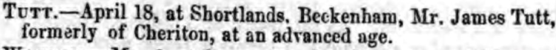
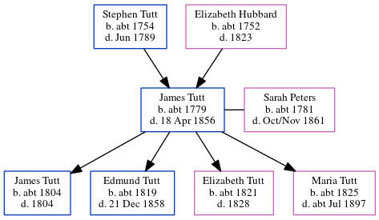

James Tutt c1779 - 1856
[ Home ] | [ Calendar ] | [ Surnames Index ] | [ Errors ] | [ Family History ]A farm bailiff and labourer and the child of Stephen Tutt and Elizabeth Hubbard, James Tutt, the 3 times great-grandfather of Nigel Horne, was born in Mersham, Kent, England c. 17791,2, was baptised there at St John The Baptist on 31 Oct 1779 and married Sarah Peters (a nurse with whom he had 4 children: James, Edmund, Elizabeth and Maria) in Folkestone, Kent, England on 3 Oct 18014.
During his life, he was living in Cheriton, Kent, England in 18411; and at 5 Shortlands Farm, Beckenham, Kent, England on 30 Mar 18512.
He died on 18 Apr 1856 Shortlands in Beckenham3 and was buried at St George in Beckenham on 20 Apr 18565.
Parents
- Stephen was born c. 1754
- Elizabeth was born c. 1752
Children
- James was born c. 1804
- Edmund was born c. 1819
- Elizabeth was born c. 1821
- Maria was born c. 1825
Citations
- 1841 England Census Online publication - Provo, UT, USA: The Generations Network, Inc., 2006.Original data - Census Returns of England and Wales, 1841. Kew, Surrey, England: The National Archives of the UK (TNA): Public Record Office (PRO), 1841. Data imaged from the National
- 1851 England Census Online publication - Provo, UT, USA: The Generations Network, Inc., 2005.Original data - Census Returns of England and Wales, 1851. Kew, Surrey, England: The National Archives of the UK (TNA): Public Record Office (PRO), 1851. Data imaged from the National
- England & Wales deaths 1837-2007 - Findmypast
- England, Select Marriages, 1538–1973 Ancestry.com Operations, Inc.
- Kent Burials - Findmypast
- 1851 England, Wales & Scotland Census - Findmypast (was age 71 and the head of the household)
Media
Kentish Gazette May 6, 1856

England & Wales deaths 1837-2007 Transcription - BMD-D-1856-2-TZ-000116-017
1851 England, Wales & Scotland Census Transcription - GBC-1851-0005481612
England Marriages 1538-1973 - R_848007476
Kent, Canterbury Archdeaconry banns 1754-1928 - GBPRS/CANT/M/94048837/1
England Births & Baptisms 1538-1975 - R_873225922
Kent Burials - GBPRS/D/28122257
Kent Baptisms - PRS/KENT/BAP/0412177
Kent Baptisms - GBPRS/B/82334807/1
Family Tree
Map
Generated by ged2site. Last updated on Jul 3, 2024